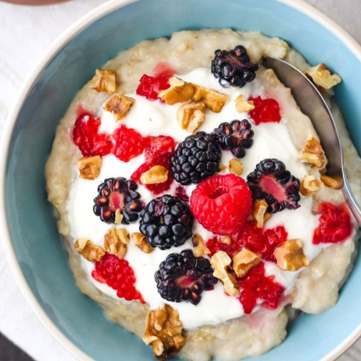

Oatmeal

Description
An easy to make high protein oatmeal. It is a perfect food for gym goers. Besides the high level protein, there are
also healthy fats and fiber. All you need is a microwave to make this amazing meal.
Ingredients
- 1 cup instant oats
- 200ml of plain milk
- 1 tablespoon chia seeds
- 1 tablespoon peanut butter
- 1 tablespoon honey
- 1 cup protein powder
- 1 cup berries (optional)
- 1 cup nuts (optional)
Steps
- Add the oats into a bowl.
- Scatter the chia seeds on top of the oats evenly.
- Pour the milk until all of the oats and chia seeds are submerged.
- Microwave them for 1 minute at 800 watt.
- Using two different spoons, get a scoop of peanut butter and honey, and add them to the oatmeal.
- Add the protein powder.
- Stir well.
- If it's too heavy, add milk again until you get the desired consistency.
- If you have them, spread the berries and nuts on top of the oatmeal.
- Enjoy!
Home